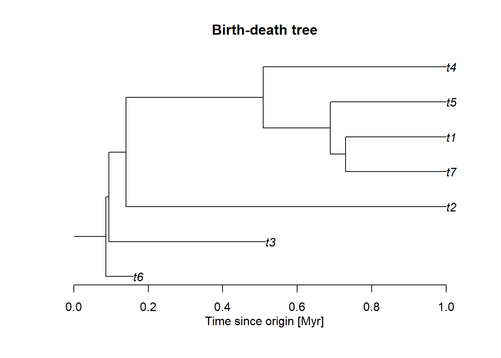
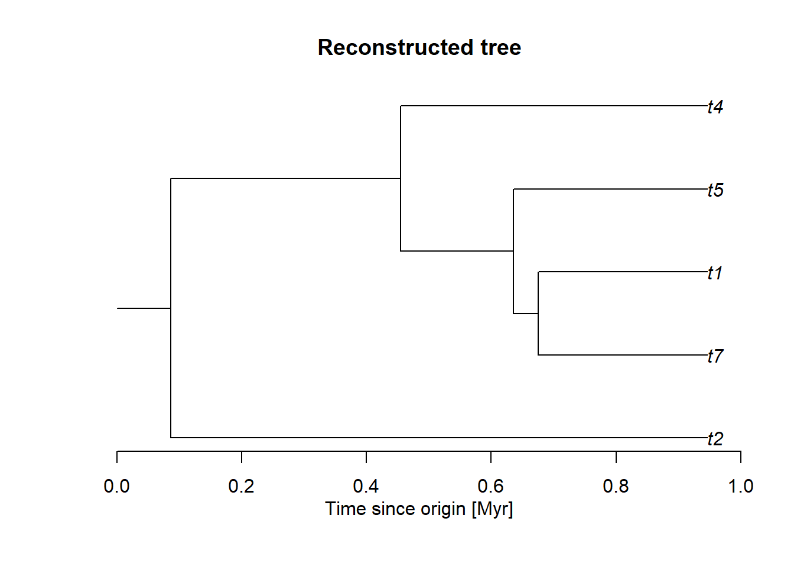
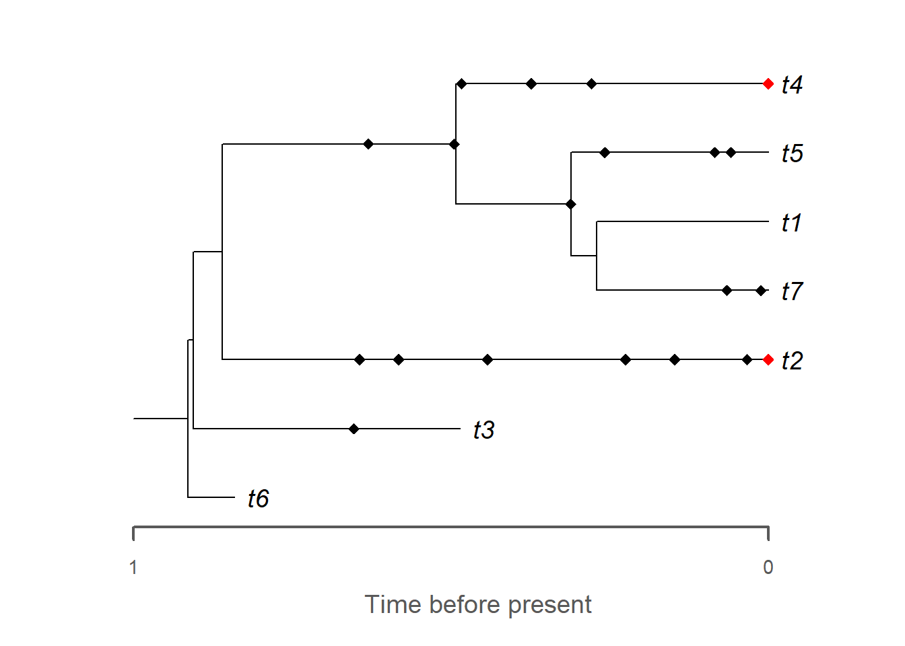
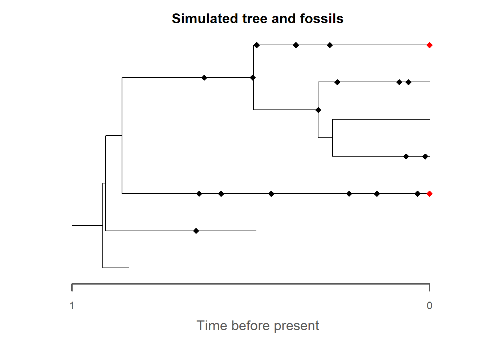
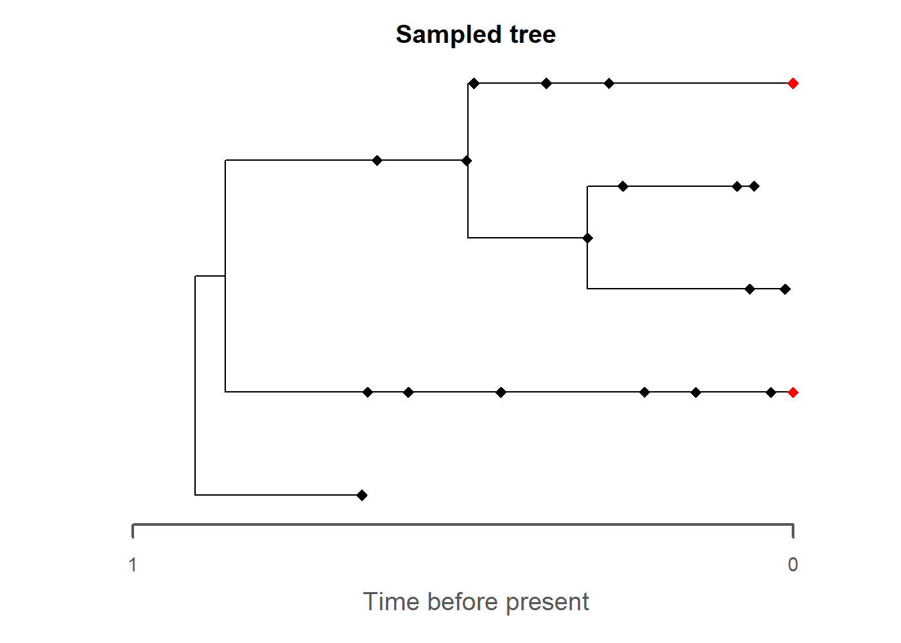
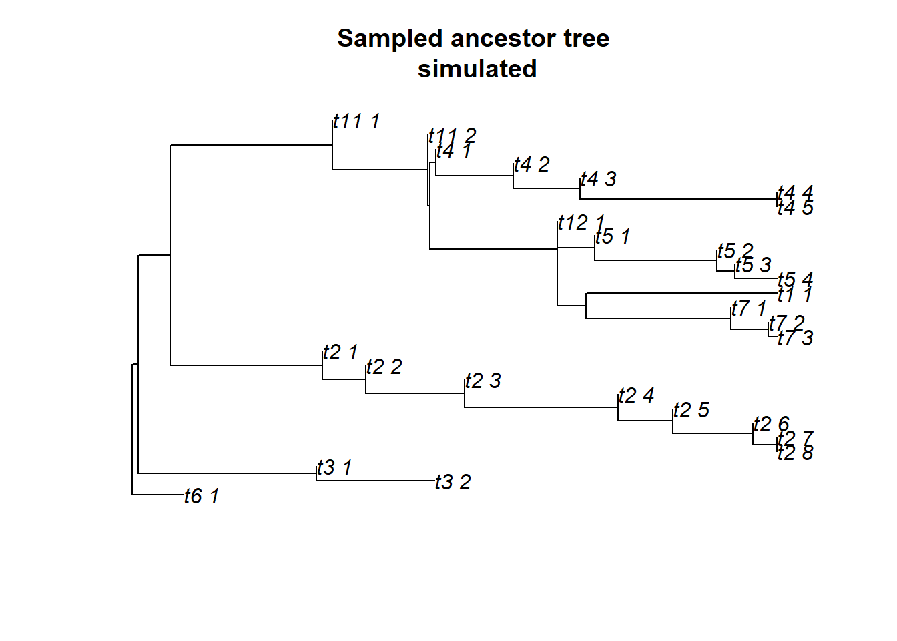
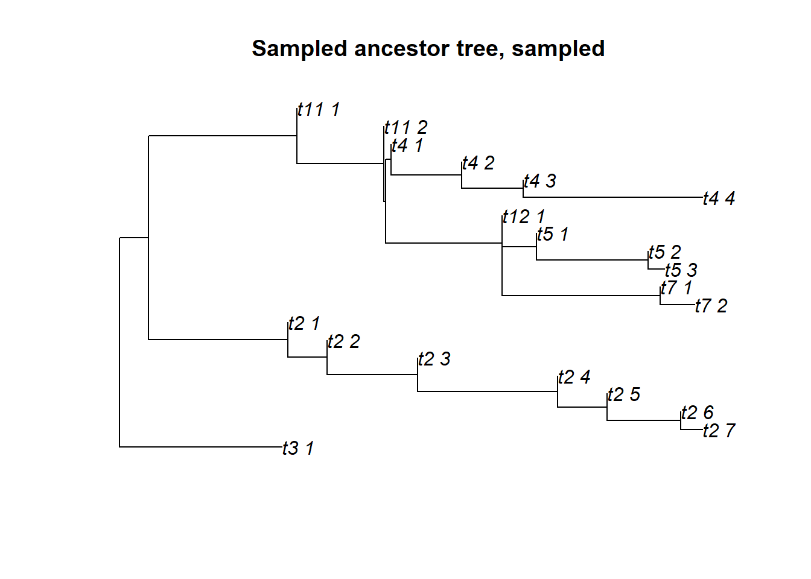

This chapter introduces the Fossilized Birth-Death (FBD) process using forward simulations.
9.2 Simulating the complete BD tree
We start by simulating a tree using the TreeSim package. This package simulates trees conditioned on age, number of tips, or both. In stratigraphic paleobiology, the timescale of observation is often prescribed (e.g., lifespan of a basin, time interval covered by a section), which is why we focus on simulating conditioned on age.
# fix random seed for reproducibilityseed =42set.seed(seed)# model parameters, modify as you see fitlambda =2# speciation ratemu =0.3# extinction ratet_max =1# duration of the simulationtree = TreeSim::sim.bd.age(age = t_max,numbsim =1, # only simulate one treelambda = lambda,mu = mu,mrca =FALSE, # age is time since origin, tree has a rood edgecomplete =TRUE)[[1]] # get the complete tree# inspect the treetree
Phylogenetic tree with 7 tips and 6 internal nodes.
Tip labels:
t6, t3, t2, t4, t5, t7, ...
Rooted; includes branch length(s).
This produces a phylo object, which we can plot:
plot(tree,root.edge =TRUE,main ="Birth-death tree")axis(1)mtext("Time since origin [Myr]", side =1, line =2)

Note that this is a complete tree, meaning it contains extinct lineages. For comparison, let’s plot the reconstructed tree, which prunes all extinct lineages:
reconstructed_tree = tree |> geiger::drop.extinct(tol =10^-8)plot(reconstructed_tree,root.edge =TRUE,main ="Reconstructed tree")axis(1)mtext("Time since origin [Myr]", side =1, line =2)

9.3 Simulating fossils along the tree
Now, let’s sample some fossil occurrences along the tree according to a specified sampling rate:
sp edge hmin hmax
1 2 2 0.65280066 0.65280066
2 3 3 0.03348379 0.03348379
3 3 3 0.64393334 0.64393334
4 3 3 0.58243031 0.58243031
5 3 3 0.14728030 0.14728030
6 3 3 0.22452495 0.22452495
7 3 3 0.44237404 0.44237404
8 4 4 0.48318219 0.48318219
9 4 4 0.37341457 0.37341457
10 4 4 0.27850257 0.27850257
...
Fossil record with 18 occurrences representing 7 species
Fossil record not simulated using taxonomy: all speciation events are assumed to be symmetric
Here you can inspect the generated fossil object, which contains information about species, the corresponding edge in the tree and age in the hmin and hmax column. Be aware that the entries in hmin and hmax are ages, even though the naming implicitly suggests that they might be heights (which is doubly confusing).
So far, we have focused on simulating fossils only. Now let’s sample some of the extant tips too by adding them to the fossil object. Here the parameter rho specifies what portion of the extant tips are sampled.
rho =0.5# proportion of extant tips that are sampledfossils2 = FossilSim::sim.extant.samples(fossils = fossils,tree = tree,rho = rho)# plot the outputplot(fossils2,tree = tree,extant.col ="red",show.tip.label =TRUE)

If you inspect the newly generated fossil object, you can see the new fossils of age 0 added.
This gives us the option to introduce the concept of the sampled tree:
plot(fossils2,tree = tree,extant.col ="red",reconstructed =FALSE,main ="Simulated tree and fossils")plot(fossils2,tree = tree,extant.col ="red",reconstructed =TRUE,main ="Sampled tree")


The sampled tree is the tree with all unsampled lineages (extant and extinct) removed. The sampled tree is the best we can hope to recover from our available data, as we will never recover unsampled lineages.
9.4 Tasks and discussion points
Explore the simulation pipeline by modifying the parameters and the random seed. How large is the intrinsic variation in the trees when parameters are fixed? Are there parameters where the true tree, reconstructed tree, and sampled tree differ most/least?
Think of the timescale you are usually on. What parameters work well on this scale?
Sampling rate: What determines the sampling rate on your timescale? Does the sampling rate depend on different drivers on different spatial and temporal scales (e.g., section vs. basin. vs. global scale)? If you put in more effort, could you increase it?
Sampling in the present, fully extinct trees, and rho: rho states that the extant tips undergo a different sampling regime. If you are working on fully extinct phyla, what is an appropriate choice of rho and what counts as the present? What about the case where you observe a fixed time-interval in the past, but taxa potentially survive longer than the observed time interval? How would work in the inference?
9.5 Advanced topics
These topics are not necessary for the workshop, but if you’re interested and have time you can work through them and potentially already start your first inference.
9.6 Exporting trees with sampled ancestors
For comparability with other software packages, fossil objects have to be “baked in” the phylo object as tips at the end of an edge of length 0. We show this for the curious:
# generate sampled ancestor treeSAt = FossilSim::SAtree.from.fossils(tree = tree,fossils = fossils2)plot(SAt$tree,main ="Sampled ancestor tree\n simulated")# select extant tips based on the fossil objectsampled_extant_tips = SAt$fossils$tip.label[SAt$fossils$hmin ==0]# generate sampled tree from SAtreeSAt_sampled = FossilSim::sampled.tree.from.combined(tree = SAt$tree,sampled_tips = sampled_extant_tips)plot(SAt_sampled,main ="Sampled ancestor tree, sampled")


If you compare these trees to the ones above you will see that they correspond the the tree with the fossils plotted along the edges (with the exception of a change in tip labels).
9.6.1 Simulating morphological data along an FBD tree
Simulation of morphological data along an FBD tree works as before by handing the fossil object to sim.morpho:
With this data at hand, you can now try to recover your simulation setup parameters using the Bayesian tree inference tool of your choice. Example scripts for this are available under “Inference helpers” (chapter 13).